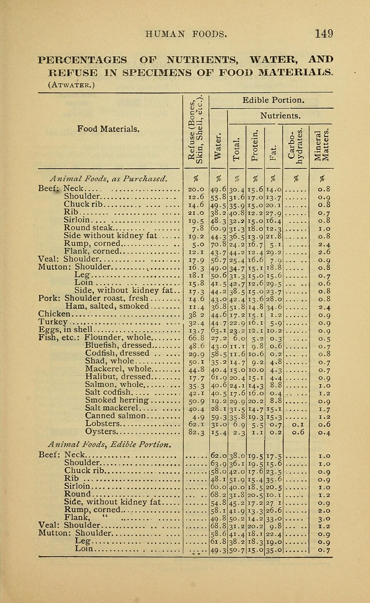

Frutos do mar
Hadoque defumado com maçã ao vinagrete de menta

Ingredientes
- 350 g de hadoque defumado fatiado
- 500 g de maçãs verdes descascadas em fatias finas
- 50 g de alface lisa em tiras
- 4 talos de cebolinha
- Molho: 100 ml de iogurte integral + 50 ml de mel
- Vinagrete: 80 g de geleia de menta, 30 ml de vinagre de maçã, 40 ml de azeite
Modo de preparo
- Misture iogurte e mel; junte as maçãs. Prepare o vinagrete.
- Branqueie as cebolinhas e amarre as fatias de hadoque em formato de rosas.
- No vazador, monte maçã + hadoque; arrume alface ao redor e regue com o vinagrete.